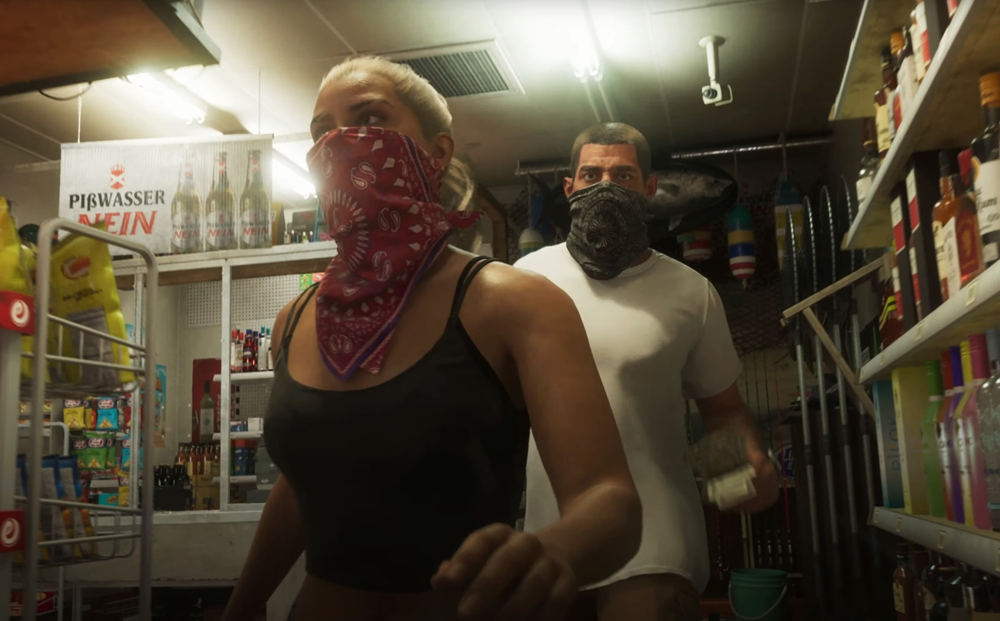

No trailer, uma mulher mencionou o nome de Lucia nos primeiros frames, enquanto o nome de Jason permanece uma incógnita até agora. Em setembro do ano passado, durante o vazamento em massa do jogo, ambos foram vistos em ação na versão alpha. Foi nessa época que seus nomes foram divulgados.
A possibilidade de Lucia e Jason serem personagens jogáveis na sequência é bastante alta. No entanto, uma confirmação definitiva ainda não foi anunciada, e os detalhes sobre como essa dinâmica funcionará permanecem desconhecidos. A Rockstar promete revelar mais informações ao longo de 2024.

Nos últimos meses, Lucia tem sido um dos nomes mais discutidos entre os fãs, pois está prestes a se tornar a primeira protagonista feminina na era moderna da franquia GTA. Os rumores sugerem que, apesar de ser mais jovem que Jason, ambos são membros da mesma gangue em Vice City.
De acordo com as especulações, Lucia é retratada como a integrante mais jovem do grupo, mas sua maturidade emocional a destaca entre os demais personagens, contrariando a expectativa de comportamento típico de sua idade.
Os vazamentos do ano passado retratam jason como um homem "bastante jovem", com especulações sugerindo que ele é interpretado pelo ator Bryan Zampella. Curiosamente, o astro tem deixado pistas discretas sobre seu possível envolvimento com GTA 6.
De acordo com os rumores, Jason faz parte da mesma gangue de Lucia e é destacado por sua dedicação a atividades recreativas, como pesca ilegal e pilotagem de motocicletas. Parece que suas ações em Vice City estão intimamente ligadas a esses interesses.
Adicionalmente, ele é caracterizado como alguém desleixado e moralmente ambíguo em suas práticas criminosas, contrastando fortemente com a personalidade de Lucia.